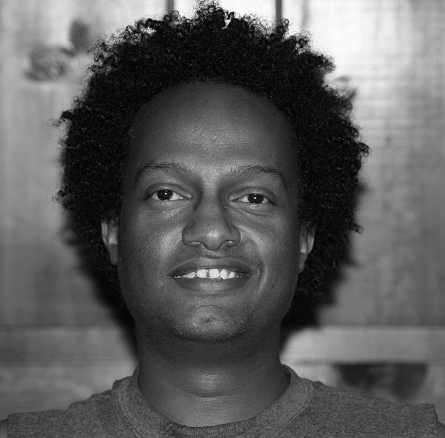

About Me
Front-End Web Developer leveraging a background in digital design to build a more intuitive user experience on the web. Recently earned a certificate in Full Stack Development from the University of Minnesota, with newly developed skills in JavaScript, CSS, React.js, and responsive web design. Known as an innovative problem-solver passionate about developing apps, with a focus on mobile-first design and development. With each project, my aim is to best engage my audience for an impactful user-experience. Excited to leverage skills in the future as part of a fast-paced, quality-driven team in order to build better experiences on the web.